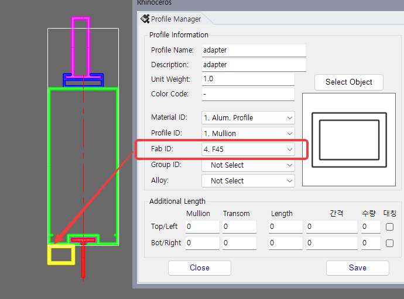
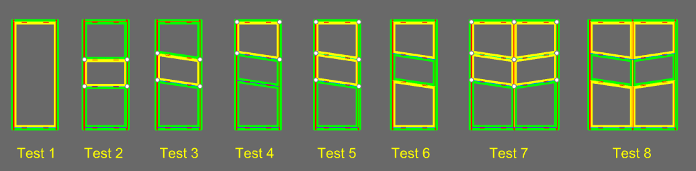

Fab_ID = 4.F45
모델링 Front View 기준으로 두 선의 중간 각도를 찾아 45도 방향 가공을 적용하는 Fab ID 설정입니다.
Glass 두께 변경 등으로 Adapter와 같은 부재에 선택적인 45도 가공이 필요할 때 사용합니다. Mullion Line과 Transom Line이 만나는 면을 기준으로 절단 각도를 계산하여 가공합니다.
4.F45로 지정합니다.

| 항목 | 설명 |
|---|---|
| 가공 기준 | Model Front View 기준 두 선의 중간 각도를 사용합니다. |
| 적용 대상 | Glass 두께 변경 등으로 선택적 45도 가공이 필요한 Adapter류 부재에 적용합니다. |
| 비직각 조건 | 직각이 아닌 조건에서도 두 선의 중간 각도를 기준으로 절단합니다. |
Fab_ID = 4.F45 기준의 Front View 45도 가공 내용으로 구성되어 있습니다.